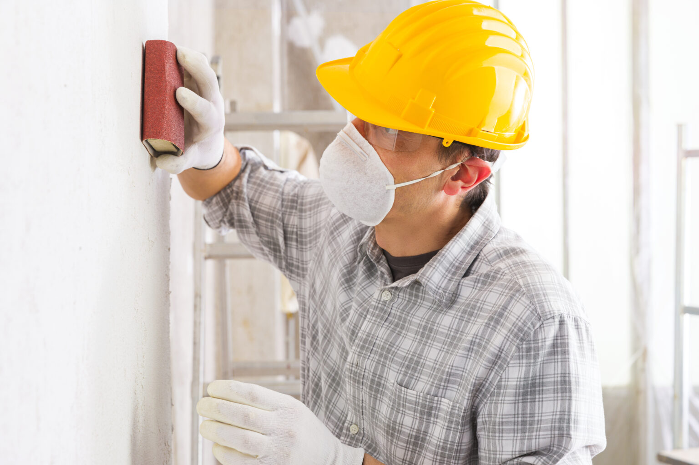

Como lixar parede: conheça um passo a passo prático
Neste guia, você vai aprender como lixar parede de forma prática, conhecer os tipos de lixa, massas e seladores, além de seguir um passo a passo que facilita o trabalho e evita retrabalho.

Por que é importante preparar a superfície antes de pintar?
Quem deseja entender como lixar parede precisa saber que essa etapa não serve apenas para melhorar a aparência. Uma superfície mal preparada pode apresentar descascamentos, manchas, bolhas e até problemas de aderência poucos meses após a pintura.
Saiba que lixar remove imperfeições e resíduos que impedem a fixação adequada da tinta. Corrigir buracos, nivelar áreas irregulares e aplicar o selador certo cria uma base uniforme, prolonga a durabilidade da pintura e garante um acabamento esteticamente agradável e mais protegido contra desgaste.
Quais são as gramaturas de lixas de parede?
As lixas variam de acordo com a finalidade. As grossas, entre 60 e 100, retiram tinta antiga e corrigem irregularidades. As médias, entre 120 e 150, refinam a superfície. As finas, acima de 180, garantem o acabamento antes da pintura.
Quais são os tipos de lixas para parede?
Escolher a lixa certa é essencial para conseguir um bom acabamento na sua pintura. No caso de paredes, as mais indicadas são:
lixa para massa: ideal para alvenaria, reboco, gesso e superfícies já preparadas com massa corrida. Corrige imperfeições e deixa a parede lisa para receber a pintura;
lixa madeira: útil quando é preciso preparar rodapés ou móveis fixos junto à parede antes de pintar, garantindo uniformidade no acabamento.
Outros tipos, como lixa d’água e lixa ferro, têm aplicação específica em metal e não fazem parte do processo de lixamento de paredes, sendo usadas apenas em casos muito pontuais.
Quais são os tipos de massa e seladores para pintura?
Ao aprender como lixar parede, também é essencial escolher o produto certo para nivelar a superfície. A massa corrida é a mais utilizada em interiores, pois proporciona acabamento liso e uniforme, ideal para receber pintura.
A massa acrílica apresenta maior resistência à umidade e atende melhor áreas externas e banheiros. Após o nivelamento, o selador é usado para preparar a parede, equilibrar a absorção da tinta, melhorar a aderência e evitar manchas ou desperdício de produto.
Qual é o passo a passo simples para lixar parede?
Agora que sabe mais sobre o assunto, é hora de entender como lixar parede do jeito certo. Confira o passo a passo a seguir:
1. Limpe a parede: retire poeira, gordura e manchas com pano úmido e detergente neutro. Para mofo, aplique água sanitária e enxágue.
2. Verifique infiltrações: manchas úmidas indicam problemas que precisam de reparo antes da pintura.
3. Corrija buracos ou furos: preencha com massa corrida ou acrílica e espere secar.
4. Remova pintura solta: use espátula para retirar partes descascadas.
5. Lixe a parede: inicie com lixa grossa e finalize com fina, mantendo movimentos circulares e pressão uniforme.
6. Elimine o pó: utilize aspirador ou pano úmido.
7. Aplique massa corrida: nivele a superfície com a desempenadeira e aguarde a secagem.
8. Lixe novamente: use lixa média para preparar a parede para o selador e a pintura.
Para garantir que a pintura alcance o melhor resultado, cada etapa de preparação da parede deve ser feita com atenção. Seguir o processo correto evita retrabalho, aumenta a durabilidade e valoriza o acabamento. Com os materiais certos, o serviço fica mais rápido e eficiente.